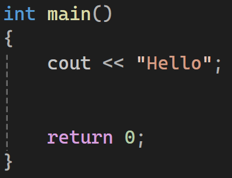

1. First of all , when we create a new file to write our code in , we must add a library called iostream.
This is how we should write it :

iostream meaning ➡️ i means input 〰️ o means output 〰️ stream means something like data flow or sequence of data.
The iostream library is an important library , that gives us permission to print output , take input from the user and other basic things.
2. We must add using namespace std;
This is how we should write it :

This statement makes programming easier and shoud be added at the beginning of the file.
3. We must add the main function , with curly braces , there is where we write the code (inside the curly braces).
This is how we should write it :

❗Alert : Programming keywords like iostream and main must be written exactly as shown.
4. We must add return 0 inside the main , and it must be in the last line.
This is how we should write it :
Its purpose is to tell the compiler (program) that the code ends here.
Anything written after return 0 not be executed , but it is not considered an error.
Now we can get started and write the code
To print anything , we use cout command , then write ( << ) , then put what we want to print inside double quotes ( " " ) , and finally a semicolon ( ; ).
Example :
If we want to print Hello , this is how we write it :
Remark : In programming , most statements end with a semicolon ( ; ) , this means the semicolon tells the program that the instruction is finished.